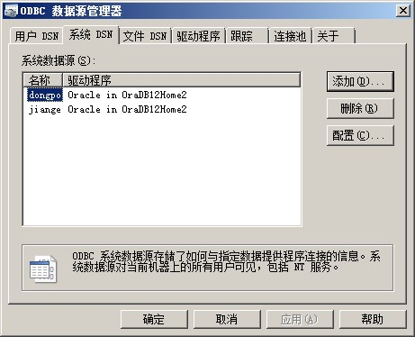
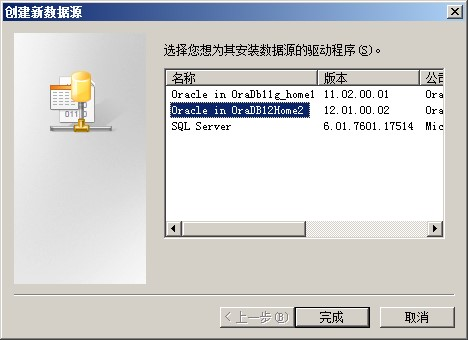
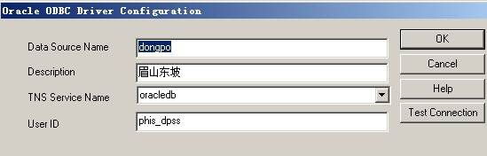
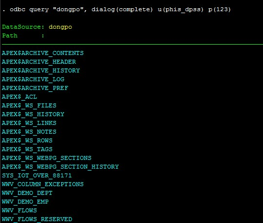

Chapter 8 SQL/Tableau/PowerBI
REDCAP is based on MySQL, still a data store and management tool
8.1 SQL
- SQL(Structured Query Language) is used to create queries to manipulate the data stored in a database.
- Oracle SQL, is one like Microsoft SQL Server, PL/SQL
- 声明式编程(Declarative programming, e.g. SQL) VS. 命令式编程(Imperative programming), however Python is usually coded in an imperative way but can use the declarative style if necessary.
- 声明式编程 allow users to focus more on the desired outcome than the exact computational steps required to achieve that outcome. This can increase efficiency and code readability
- Case: Oracle安装备忘录
*新农合数据 oracle 11.2.0.1.0
下载及安装教程：https://jingyan.baidu.com/article/363872eccfb9266e4aa16f5d.html
*安装在C:\Oracle
*dmp原始数据在D:\Oracle\XXX
*dmp加载到数仓dbf在D:\app\XNH\oradata\oracledb
口令通用：XNHsc2018 sqlplus用户名 system
*基层卫生信息系统(phis数据) oracle 12.1.0.2.0
用户名：XNH 口令：XNHsc2018
*基目录D:\app\XNH
*安装在D:\app\XNH\product\12.1.0\dbhome_2
*数仓在D:\app\XNH\oradata
全局数据库名：oraclebd 口令：XNHsc2018 可插入数据库名：pdborcl
*登录提示
用户名：每个区县的具体数据库名字，例如剑阁：PHIS_JGS
密码：123- Case: plsql改流水号格式 建表和查询
CREATE
TABLE
ZYZDDETAIL_1
AS
SELECT
TO_CHAR(id) id, zyid, JBBM, LOGINUSERID, LOGINDATE, UPDATE_TIME
FROM
ZYZDDETAIL;- Case: sqlplus导入数据(麻烦，后来转Stata+ODBC )
1.需要确认需要的表空间
1.1创建表空间则不需要remap_tablespace
1.2不创建表空间，可以使用REMAP_TABLESPACE=ehr:users,tbs_phis:users这种语法把ehr和tbs_phis表空间中对象映射到users
1.3确认表空间可以在导入过程中查看报错，报错日志显示有缺少XXX表空间的情况下，按一次CTRL+C，再输入KILL_JOB，再YES，退出报错的导出，删除导入的用户，重新导入
1.4常见表空间（不全）SPS_PHIS、TBS_LOG、TBS_PHIS、PHIS_HIS
2.创建directory
2.1确认dmp文件所在位置，例如：dmp位于D:\bak，必须直接能读取到dmp的路径；
2.2打开sqlplus，执行：system/XNHsc2018
create or replace directory full as 'D:\bak';
create or replace directory full as 'D:\Oracle\jiange'; //一定要加分号！
3.导入代码 cmd执行"剑阁示例"
impdp system/XNHsc2018@localhost/oracledb dumpfile=jg180915_%U.dmplogfile=jg180915_imp.log directory=full remap_tablespace=SPS_PHIS:users,TBS_LOG:users,TBS_PHIS:users,PHIS_HIS:users parallel=6 cluster=n- Open Database Connectivity (ODBC) interface makes it possible for applications(Stata/R) to access data from a variety of database management systems (e.g. SQL Server).
首先，搜索ODBC管理员，点击系统DNS添加。 
然后，添加后点击对应的数据目录，本次安装在home2，然后进行数据添加。 
datasourcename:自己命名的调用数据库名，用英文。 description：数据库描述，可以用中文。 TNS Service Name：oraclebd就是oracle导入的实例数据库。 User ID：每个县对应的ID数据库名字，比如如图所示为东坡，可在导出log中查看。 *每个县有一个数据库，所以要建立相应县个数的ODBC。 
odbc list //Stata通过ODBC查询调用任意SQL数据
help odbc

Stata中ODBC查询
8.1.1 R_SQL
Searching SQL on the website R bloggers will get collections of studying R_SQL
- Datasets are in different forms, places, access, pls use a config file - Connect R with SQL
- Writing large datasets to SQL Server can be very slow using the DBI package with an ODBC connection - Fast SQL Server Imports with R
- PowerBI Desktop can directly get Data>SQL Server raw Database to visualize, but it less cautious - SQL Server, Power BI, and R
- SQL is declarative, so the lack of control flow produce redundancy用更精简的imperative编程代替啰嗦的SQL语言 - generating readable SQL queries using {dbplyr} and {sqlfluff}
8.2 Tableau
Tableau(所有方面比Power BI好的拖动式画图软件)
8.3 Power BI
Key words: interactive data visualization, Microsoft, business intelligence(BI)